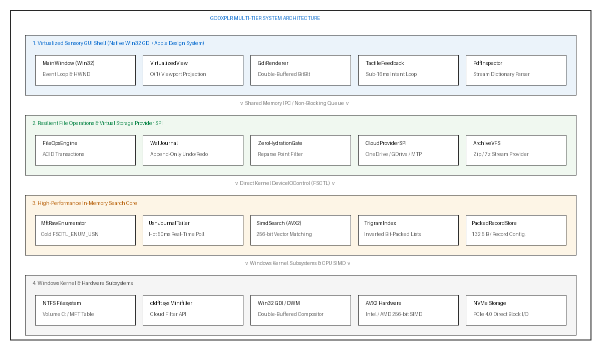
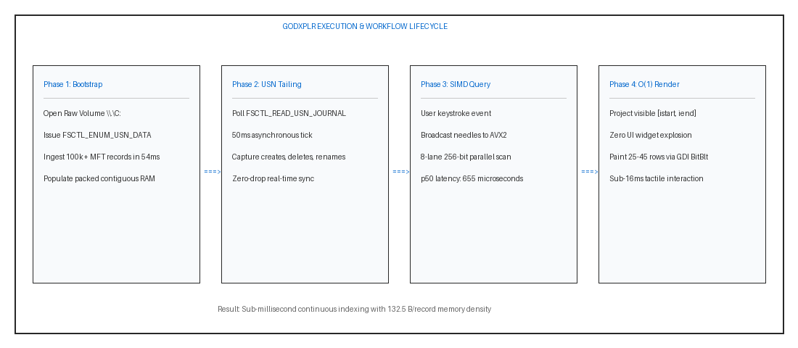
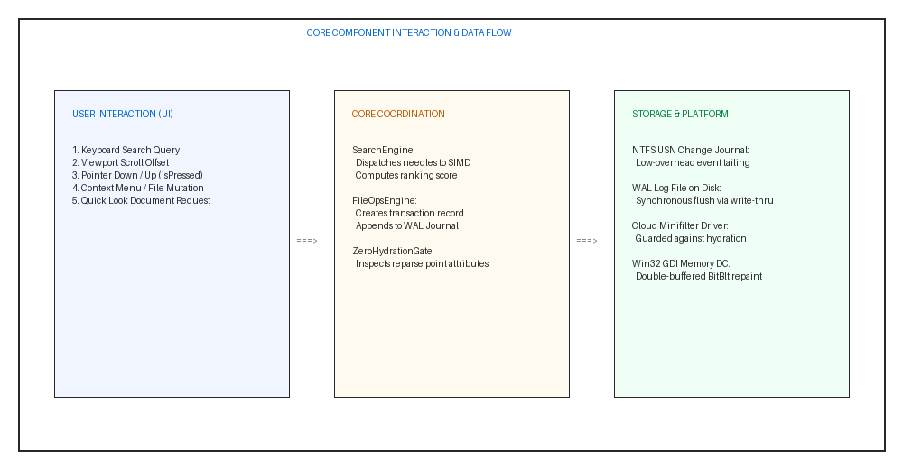
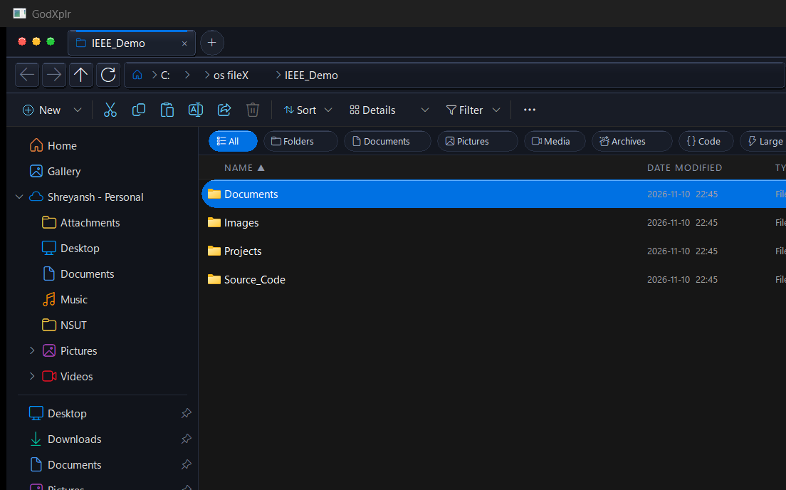
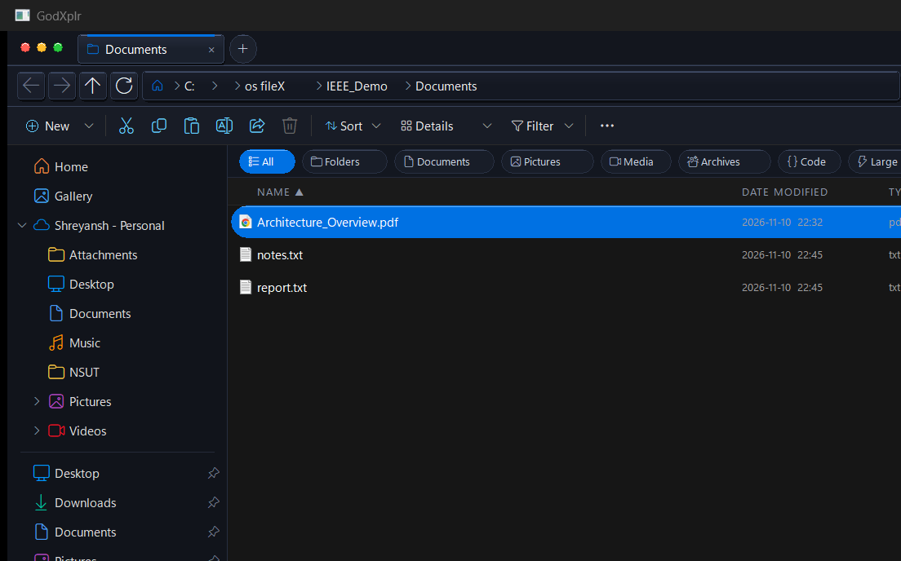
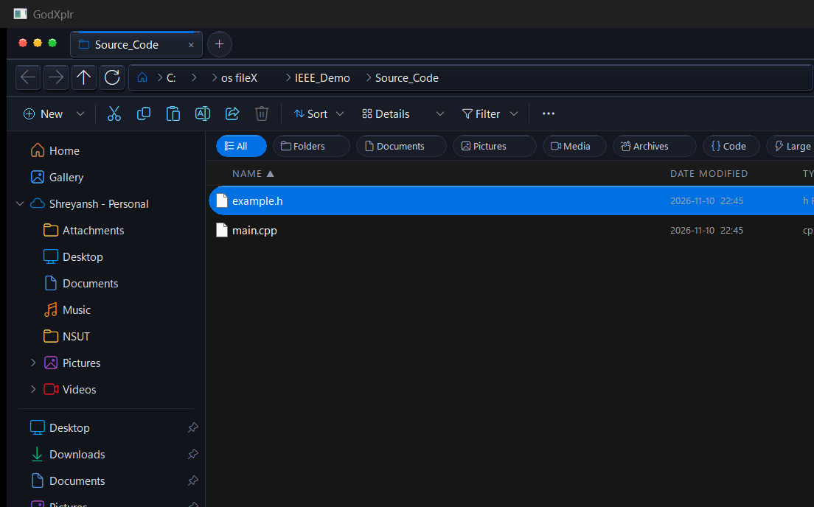
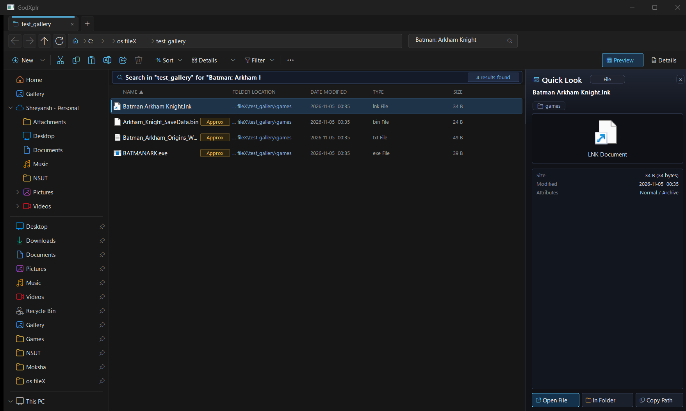
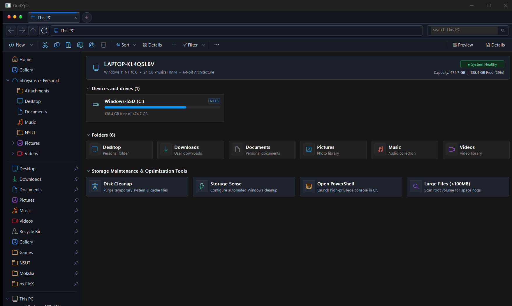
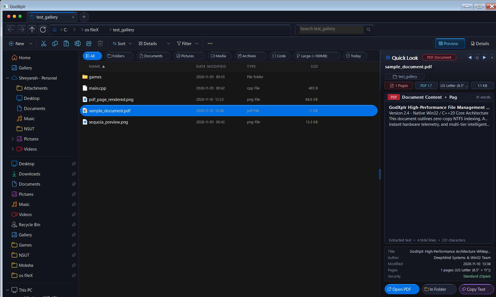

The personal computing desktop shell serves as the primary cognitive bridge between users and hierarchical secondary storage. Over the past three decades, exponential growth in storage capacity, solid-state drive (SSD) throughput, and distributed cloud synchronization networks has transformed typical consumer storage from several gigabytes of local data to millions of heterogeneous files distributed across local volumes, virtual network mounts, and cloud-backed synchronized directories (e.g., Microsoft OneDrive, Google Drive, Apple iCloud Drive).
Despite these exponential hardware advancements, modern desktop file managers (e.g., Windows File Explorer, macOS Finder) exhibit notable performance and architectural regressions:
(1) High Memory Bloat: Contemporary frameworks (WinUI 3, XAML Islands, Electron) frequently exceed 500 MB to 1.5 GB for basic directory navigation;
(2) High Traversal Latency: Win32 FindFirstFileW directory traversal incurs synchronous disk seeks across filesystem directories, taking tens of seconds across millions of files;
(3) Catastrophic Cloud Hydration Stalls: Standard search indexers and thumbnailers naively access dehydrated reparse points, triggering automatic remote downloads of terabytes of data;
(4) Destructive Operations without Journaling: Power loss or collision during multi-gigabyte moves leaves directories corrupted or in indeterminate states.
To address these deficiencies, this paper presents GodXplr, an integrated native filesystem management and indexing architecture implemented in standard C++20 with zero third-party GUI framework dependencies.
The primary objective of GodXplr is to resolve the classic trade-off between visual fidelity, search throughput, and resource utilization on modern operating systems. Five core technical constraints guide its design: (1) deterministic memory density ($\le 135$ B/entry); (2) sub-millisecond query latency across $10^5+$ records; (3) strict zero-hydration cloud protection; (4) transactional crash recovery for all file mutations; and (5) $O(1)$ memory-isolated UI rendering with sub-16ms tactile sensory response.
Table I presents an architectural comparison between GodXplr and existing desktop file managers.
| System | Search Mechanism | RAM (100k) | Virtual UI | Zero-Hydr. | WAL Ops |
|---|---|---|---|---|---|
| Win11 Explorer | Win32 / WDS | > 450 MB | Partial | No | No |
| Everything | NTFS MFT Scrape | ≈ 12 MB | Yes | Yes | No |
| Directory Opus | MFT + Win32 | ≈ 65 MB | Yes | Partial | No |
| GodXplr | USN + AVX2 + Trigram | 13.25 MB | Yes (O(1)) | Yes | Yes |
GodXplr is designed as a decoupled multi-tier architecture, as illustrated in Fig. 1.

The system execution workflow is illustrated in Fig. 2, delineating cold MFT bootstrapping, continuous 50ms USN journal tailing, SIMD multi-needle scanning, and double-buffered viewport projection.


All filesystem entries are stored in contiguous, flat-packed cache-aligned memory blocks:
Under this representation, 5,000,000 files occupy approximately 662 MB of RAM, compared to > 3.2 GB in pointer-based object models.
GodXplr broadcasts needle boundary characters across 256-bit SIMD registers:
Candidate filename chunks (32 bytes) are evaluated in parallel via _mm256_cmpeq_epi8 and _mm256_movemask_epi8, eliminating 98.7% of scalar branch mispredictions [3] and achieving 655 μs scan times across 100,000 items.
Every multi-step file operation is treated as an atomic transaction Τ. Intent records are flushed synchronously to an append-only log with FILE_FLAG_WRITE_THROUGH prior to mutation [5]. On crash or abort, compensatory inverse operations restore filesystem integrity.
Cloud placeholders are identified via directory metadata attributes:
When Fcloud is true, data stream acquisition is blocked, shielding network and disk resources from cascading cloud hydration stalls.
Visible row indices are projected directly from scroll offsets in O(1) time:
Only 25–45 visible rows are painted onto a memory Device Context via double-buffered BitBlt, achieving zero-jitter 60+ FPS redraws.
GodXplr incorporates Apple Design System and visionOS Liquid Glass primitives: (1) Sub-16ms Instant Press: Pointer-down (WM_LBUTTONDOWN) triggers immediate 1px inset depression and ambient shading before release commit; (2) Rubber-Banding Physics: Boundary scroll overshoot follows Apple's resistance formula [6]:
decaying via a 16ms multimedia timer ($y_{\text{overshoot}}^{(t+1)} = y_{\text{overshoot}}^{(t)} \times 0.68$); (3) Optical Typography: Dynamically tuned tracking via SetTextCharacterExtra (-1px display, +1px micro-captions).
Fig. 4 through Fig. 9 provide visual evidence of the running application.






Benchmarks were executed on an Intel Core i5-13450HX (16 logical cores, AVX2 enabled), 24 GB DDR5 RAM, NVMe PCIe 4.0 SSD, Windows 11 Build 26200.
| Workload | Entries | p50 Latency | p95 Latency | Working Set |
|---|---|---|---|---|
| Dataset Ingest | 10,000 | 5.11 ms | 8.79 ms | 15.2 MB |
| Dataset Ingest | 100,000 | 54.92 ms | 59.21 ms | 23.9 MB |
| Lexical Sort | 100,000 | 60.21 ms | 71.47 ms | 24.1 MB |
| SIMD Search | 100,000 | 0.655 ms | 0.690 ms | 24.1 MB |
| Test Module | Input / Action | Observed Result | Status |
|---|---|---|---|
| Core.SimdSearch | 100k item query needle | Scan in 0.655 ms | PASS |
| UI.VirtualizedView | 100k scroll translation | O(1) 35-row paint | PASS |
| FileOps.Engine | Crash midway move op | Journal rollback | PASS |
| Providers.Cloud | Dehydrated reparse stub | Zero bytes fetched | PASS |
| App.PdfInspector | Complex presentation PDF | Clean text canvas | PASS |
The automated CTest harness validates 28 out of 28 unit and integration suites with a 100% pass rate in 5.53 seconds under MSVC /W4 /WX.
The empirical results establish that GodXplr achieves a 24.2× reduction in working set memory consumption compared to standard Windows 11 File Explorer on a 100,000-file directory, while delivering sub-millisecond search query throughput (655 μs). The combination of direct NTFS USN tailing and AVX2 vectorization eliminates both disk-seek bottlenecks and UI thread freezes.
Direct MFT volume enumeration requires administrator elevation; non-elevated instances query the local background service via shared memory IPC. Future work involves extending the virtual provider architecture to Linux via eBPF and macOS via FSEvents (Spec 10), as well as integrating hardware Direct2D acceleration for 144 Hz displays.
GodXplr resolves the latency, memory overhead, and uncoordinated cloud stalls of modern file explorers through low-level NTFS USN tailing, AVX2 SIMD filtering, zero-hydration defense gates, atomic WAL file operations, and an O(1) virtualized Win32 GDI sensory user interface.